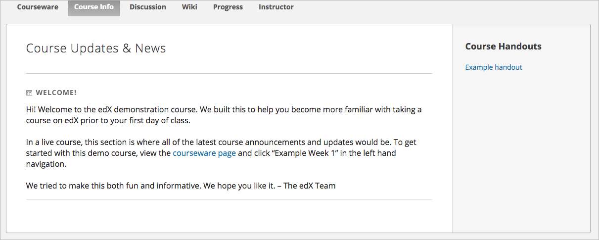

在Studio中，您可以添加课程的补充资料或讲义。 在 课程信息 选项卡下，学生可查看补充资料或讲义。
内容包括：
您可添加课程的补充资料，通知学生考试、课程表变更或是其他突发情况。
如何添加补充资料：
您可以使用先前上传的文件作为课程讲义。 学生可以在 课程信息 页面看到所有课程讲义的链接。
在添加课程讲义之前，您需要 add the file 到您的课程中并复制文件的Studio URL。 为简化操作，您可以在另一个浏览器窗口中打开Studio中的 文件与上传 页面。
如何添加课程讲义：
在 内容 菜单中，选择 补充材料
在 课程讲义 选项卡下，选择 编辑
在打开的编辑器中，用HTML格式添加之前上传的文件地址链接。 示例如下：
<p><a href="/static/Syllabus_Fall2016.pdf" target="_blank">Syllabus</a></p>
<p><a href="/static/Glossary_v3.pdf" target="_blank">Glossary</a></p>